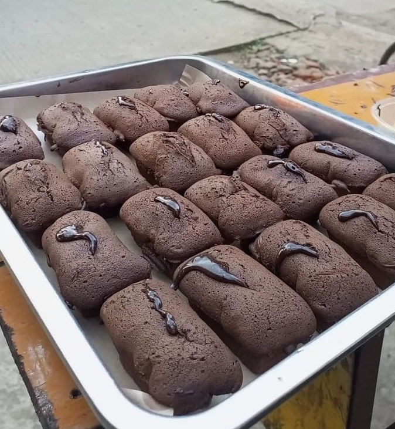

Kue Balok
Kue Balok adalah salah satu jenis kue tradisional Indonesia yang memiliki ciri khas bentuk kotak atau balok. Kue ini terkenal karena kelezatannya yang unik dan teksturnya yang kenyal...
Keistimewaan kue balok terletak pada kombinasi rasa manis gula dengan kelembutan santan kelapa yang meresap dalam setiap gigitannya. Teksturnya yang kenyal membuat kue ini begitu disukai oleh banyak orang, baik sebagai camilan ringan maupun hidangan pendamping saat minum kopi atau teh. Selain itu, kue balok seringkali dihiasi dengan taburan kelapa parut atau biji wijen, memberikan sentuhan visual yang menarik dan tambahan cita rasa yang khas. Meskipun kue balok memiliki akar budaya tradisional, namun variasi modernnya juga mulai berkembang dengan adanya inovasi dalam penggunaan bahan-bahan dan presentasi.
Bahan-bahan:
- 250 gram tepung terigu
- 200 gram gula pasir
- 100 gram mentega
- 3 butir telur
- 1 sendok teh baking powder
- 1 sendok teh vanili bubuk
- 1/2 sendok teh garam
- 200 ml susu cair
Langkah-langkah:
- Masukkan tepung terigu, gula pasir, baking powder, vanili bubuk, dan garam ke dalam mangkuk. Aduk rata.
- Tambahkan mentega yang telah dicairkan. Aduk kembali hingga tercampur dengan baik.
- Kocok telur dan tambahkan ke dalam adonan. Aduk merata.
- Tuang susu cair sedikit-sedikit sambil terus diaduk hingga adonan menjadi halus dan kental.
- Siapkan loyang yang telah diolesi mentega dan ditaburi tepung. Tuang adonan ke dalam loyang.
- Panaskan oven terlebih dahulu. Panggang adonan dalam oven dengan suhu 180 derajat Celsius selama 30-40 menit atau hingga matang dan berwarna keemasan.
- Angkat kue balok dari oven dan biarkan dingin sebelum dipotong-potong.
- Kue balok siap disajikan!